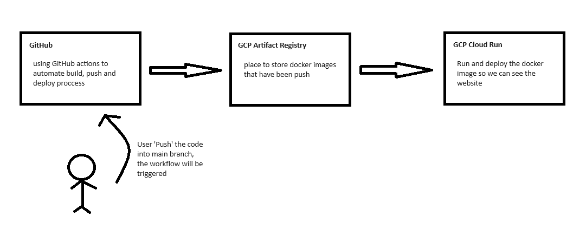

Show & Tell Project
How it works?
Automate the build, push, and deploy process of a website. Whenever a push request is made in the GitHub Repository, it will automatically be deployed into a live website.


Step 1
Create Github Repository (https://github.com/lesteryap/ShowAndTellApril13Test)


Step 3
Go to IAM and create service account in GCP:
- Provide and add necessary permission to this service account (Artifact Registry Repository Administrator, Cloud run admin, etc.)

Step 4
Push website code to Github Repository (Html/css/js)

Step 5
In the folder, create Docker file to containerize the web application
- FROM nginx:latest
- add/copy all necessary files to the container

Step 6
In the folder, create a GitHub action workflow file (.github/workflows/)
- script to build the docker file and push it into the GCP Artifact Registry
- script to deploy the build docker image to the Cloud Run environment